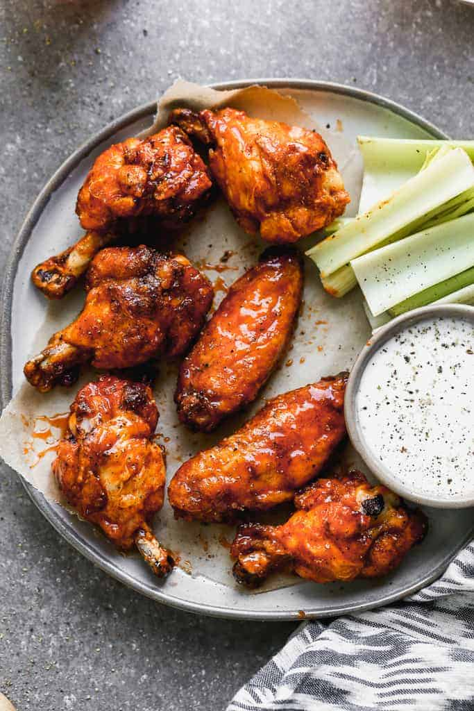

Chicken Wings

Description
Tasty wings with a hint of honey and the smokey delicious flavor of Tabasco Chipotle.
Ingredients
- 1 cup all-purpose flour
- 1 teaspoon salt
- 1/2 teaspoon black pepper
- 2 lbs chicken wings (about 8)
- 4-5 cups canola oil
- 3 tablespoons unsalted butter
- 2 tablespoons honey
- 1 1/2 tablespoons TABASCO® brand Chipotle Pepper Sauce
Directions
- Combine flour, salt and pepper in a medium-sized plastic bag.
- Remove tips from chicken wings and discard; cut remaining wings in half.
- Place chicken pieces one at a time in the bag and shake to coat well
- Remove wings to a clean piece of parchment or waxed paper and set aside
- Heat 2 inches of oil in a deep-sided skillet to 350 degrees; fry chicken in batches until crisp and golden brown, turning occasionally, 12-15 minutes.
- Once fried, place chicken on parchment-lined baking sheet and keep warm in the oven.
- Melt butter. Add the honey and TABASCO® Chipotle Sauce to hot butter and stir until well combined.
- Transfer to a large bowl.
- Add the wings and toss to coat.
- Serve immediately.
Back To Recipes